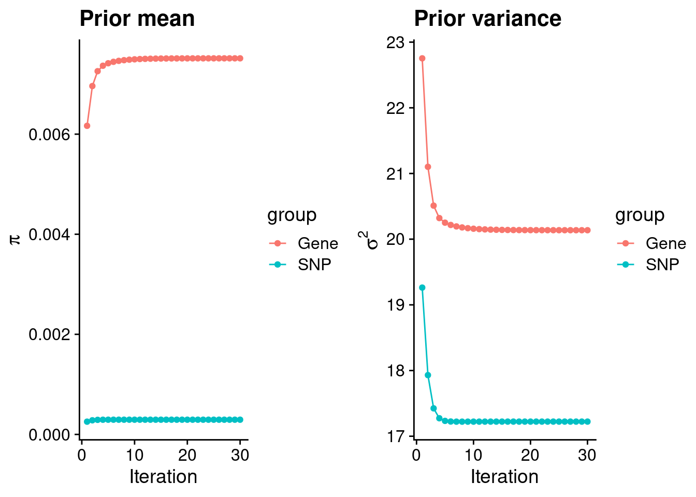
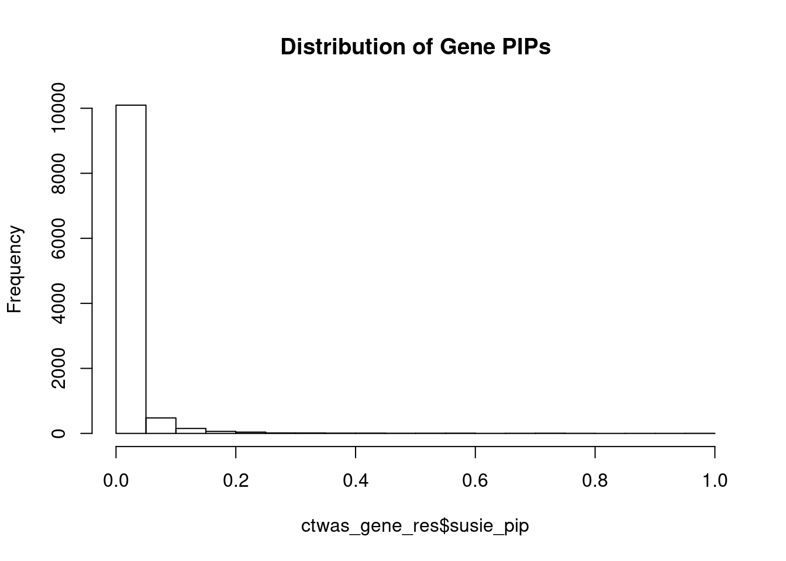
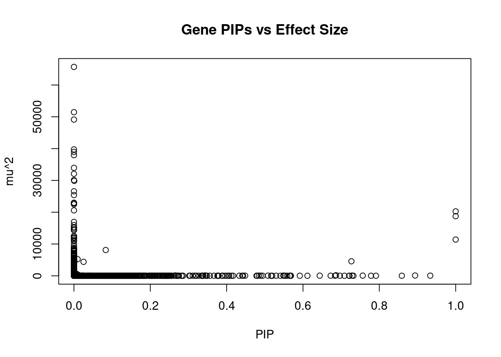
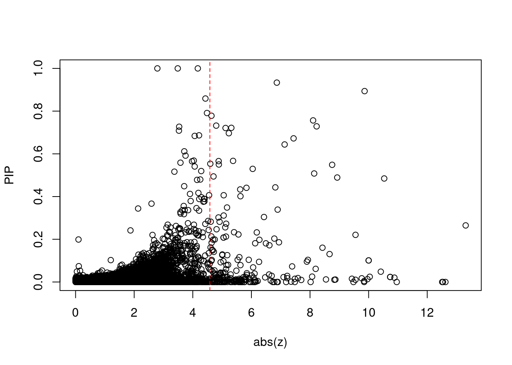
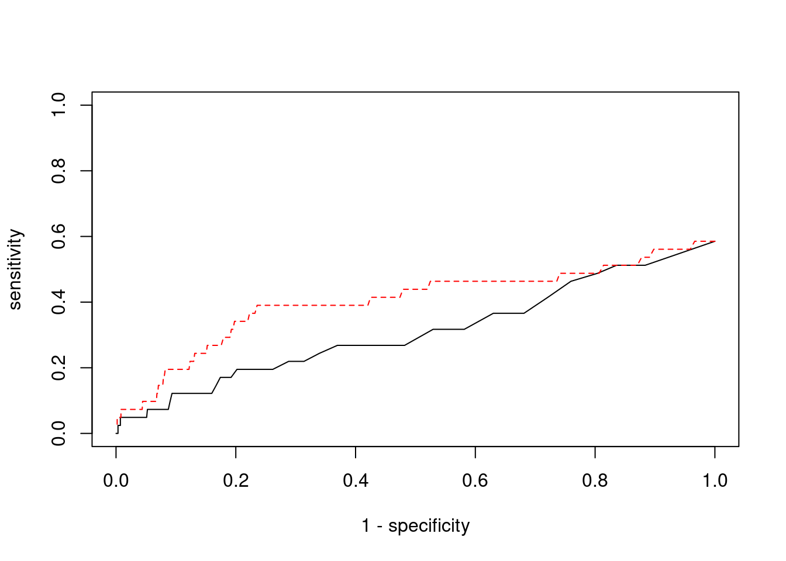

BMI - Brain Anterior cingulate cortex BA24
sheng Qian
2021-2-6
Last updated: 2022-02-13
Checks: 6 1
Knit directory: cTWAS_analysis/
This reproducible R Markdown analysis was created with workflowr (version 1.6.2). The Checks tab describes the reproducibility checks that were applied when the results were created. The Past versions tab lists the development history.
Great! Since the R Markdown file has been committed to the Git repository, you know the exact version of the code that produced these results.
Great job! The global environment was empty. Objects defined in the global environment can affect the analysis in your R Markdown file in unknown ways. For reproduciblity it’s best to always run the code in an empty environment.
The command set.seed(20211220) was run prior to running the code in the R Markdown file. Setting a seed ensures that any results that rely on randomness, e.g. subsampling or permutations, are reproducible.
Great job! Recording the operating system, R version, and package versions is critical for reproducibility.
Nice! There were no cached chunks for this analysis, so you can be confident that you successfully produced the results during this run.
Using absolute paths to the files within your workflowr project makes it difficult for you and others to run your code on a different machine. Change the absolute path(s) below to the suggested relative path(s) to make your code more reproducible.
| absolute | relative |
|---|---|
| /project2/xinhe/shengqian/cTWAS/cTWAS_analysis/data/ | data |
| /project2/xinhe/shengqian/cTWAS/cTWAS_analysis/code/ctwas_config.R | code/ctwas_config.R |
Great! You are using Git for version control. Tracking code development and connecting the code version to the results is critical for reproducibility.
The results in this page were generated with repository version eb13ecf. See the Past versions tab to see a history of the changes made to the R Markdown and HTML files.
Note that you need to be careful to ensure that all relevant files for the analysis have been committed to Git prior to generating the results (you can use wflow_publish or wflow_git_commit). workflowr only checks the R Markdown file, but you know if there are other scripts or data files that it depends on. Below is the status of the Git repository when the results were generated:
Ignored files:
Ignored: .ipynb_checkpoints/
Untracked files:
Untracked: code/.ipynb_checkpoints/
Untracked: code/AF_out/
Untracked: code/BMI_out/
Untracked: code/T2D_out/
Untracked: code/ctwas_config.R
Untracked: code/mapping.R
Untracked: code/out/
Untracked: code/run_AF_analysis.sbatch
Untracked: code/run_AF_analysis.sh
Untracked: code/run_AF_ctwas_rss_LDR.R
Untracked: code/run_BMI_analysis.sbatch
Untracked: code/run_BMI_analysis.sh
Untracked: code/run_BMI_ctwas_rss_LDR.R
Untracked: code/run_T2D_analysis.sbatch
Untracked: code/run_T2D_analysis.sh
Untracked: code/run_T2D_ctwas_rss_LDR.R
Untracked: data/.ipynb_checkpoints/
Untracked: data/AF/
Untracked: data/BMI/
Untracked: data/T2D/
Untracked: data/UKBB/
Untracked: data/UKBB_SNPs_Info.text
Untracked: data/gene_OMIM.txt
Untracked: data/gene_pip_0.8.txt
Untracked: data/mashr_Heart_Atrial_Appendage.db
Untracked: data/summary_known_genes_annotations.xlsx
Untracked: data/untitled.txt
Note that any generated files, e.g. HTML, png, CSS, etc., are not included in this status report because it is ok for generated content to have uncommitted changes.
These are the previous versions of the repository in which changes were made to the R Markdown (analysis/BMI_Brain_Anterior_cingulate_cortex_BA24.Rmd) and HTML (docs/BMI_Brain_Anterior_cingulate_cortex_BA24.html) files. If you’ve configured a remote Git repository (see ?wflow_git_remote), click on the hyperlinks in the table below to view the files as they were in that past version.
| File | Version | Author | Date | Message |
|---|---|---|---|---|
| Rmd | eb13ecf | sq-96 | 2022-02-13 | update |
| html | e6bc169 | sq-96 | 2022-02-13 | Build site. |
| Rmd | 87fee8b | sq-96 | 2022-02-13 | update |
Weight QC
[1] 10914
1 2 3 4 5 6 7 8 9 10 11 12 13 14 15 16
1077 759 640 423 520 617 523 418 401 429 656 600 225 367 374 510
17 18 19 20 21 22
639 170 840 329 119 278 [1] 8792[1] 0.8055708Load ctwas results
Check convergence of parameters
********************************************************Note: As of version 1.0.0, cowplot does not change the default ggplot2 theme anymore. To recover the previous behavior, execute:
theme_set(theme_cowplot())********************************************************
| Version | Author | Date |
|---|---|---|
| e6bc169 | sq-96 | 2022-02-13 |
gene snp
0.0075151663 0.0002940872 gene snp
20.13648 17.22258 [1] 336107[1] 10914 7535010 gene snp
0.004913926 0.113548318 [1] 0.1774827 15.9888151Genes with highest PIPs

| Version | Author | Date |
|---|---|---|
| e6bc169 | sq-96 | 2022-02-13 |
genename region_tag susie_pip mu2 PVE z
8261 MRPL1 4_52 1.0000000 18758.92578 5.581236e-02 3.486435
12013 CCDC169 13_13 1.0000000 11401.82993 3.392321e-02 -2.791355
2884 ARHGEF26 3_95 0.9999995 20272.03741 6.031421e-02 -4.170865
925 PIK3C3 18_23 0.9333936 52.03619 1.445083e-04 6.867052
12058 ETV5 3_114 0.8936853 95.62289 2.542547e-04 9.862284
9400 SHARPIN 8_94 0.8589433 25.30546 6.466976e-05 -4.430963
2457 STIM2 4_22 0.7910960 23.29647 5.483298e-05 -4.483915
4656 HTR1B 6_53 0.7782866 26.47483 6.130489e-05 -4.637032
3541 ZMIZ2 7_33 0.7564988 66.00229 1.485558e-04 -8.105339
9452 TH 11_2 0.7320834 27.22928 5.930881e-05 4.798775
9668 KCNB2 8_53 0.7286468 65.37647 1.417297e-04 -8.225507
279 CPS1 2_124 0.7268233 4573.07473 9.889165e-03 -3.534889
5792 ECE2 3_113 0.7217494 29.16568 6.262979e-05 -5.315245
9221 PNPLA2 11_1 0.7209733 26.40319 5.663671e-05 5.117727
318 VRK2 2_38 0.7085776 24.09783 5.080282e-05 3.526868
12683 LINC01977 17_45 0.6965391 28.35031 5.875243e-05 5.229978
7428 PPM1M 3_37 0.6865923 185.89444 3.797413e-04 4.213260
10559 SRGAP1 12_39 0.6839117 23.32861 4.746914e-05 -4.065215
7744 R3HCC1L 10_62 0.6724263 39.81237 7.964988e-05 7.438889
10515 ZKSCAN5 7_61 0.6438389 53.55690 1.025924e-04 7.133466
num_eqtl
8261 1
12013 1
2884 1
925 2
12058 1
9400 1
2457 2
4656 1
3541 1
9452 1
9668 1
279 1
5792 1
9221 1
318 2
12683 1
7428 2
10559 2
7744 1
10515 1Genes with largest effect sizes

| Version | Author | Date |
|---|---|---|
| e6bc169 | sq-96 | 2022-02-13 |
genename region_tag susie_pip mu2 PVE z
10292 SLC38A3 3_35 0.000000e+00 65689.74 0.000000e+00 6.725828
7423 CAMKV 3_35 0.000000e+00 51451.22 0.000000e+00 -9.847856
7600 CCDC171 9_13 0.000000e+00 49126.82 0.000000e+00 8.020412
38 RBM6 3_35 0.000000e+00 39742.84 0.000000e+00 12.536042
9 SEMA3F 3_35 0.000000e+00 38958.32 0.000000e+00 12.510562
11183 DEFB134 8_15 0.000000e+00 37946.52 0.000000e+00 -6.778423
7425 MST1R 3_35 0.000000e+00 33940.06 0.000000e+00 -12.621262
4697 HEY2 6_84 0.000000e+00 32081.18 0.000000e+00 4.922936
9326 STX19 3_59 0.000000e+00 30090.45 0.000000e+00 -5.059656
12530 RP11-490G2.2 1_60 8.154418e-04 29860.63 7.244599e-05 5.044019
7824 LEO1 15_21 1.925138e-11 26586.28 1.522797e-12 4.647326
5275 LYSMD2 15_21 0.000000e+00 25404.36 0.000000e+00 -4.402599
5271 MFAP1 15_16 0.000000e+00 22989.16 0.000000e+00 4.302998
11993 HYPK 15_16 0.000000e+00 22890.18 0.000000e+00 4.322039
9321 DHFR2 3_59 0.000000e+00 22806.25 0.000000e+00 3.750765
7420 RNF123 3_35 0.000000e+00 22473.32 0.000000e+00 -10.959165
11448 CKMT1A 15_16 0.000000e+00 20589.76 0.000000e+00 4.129652
2884 ARHGEF26 3_95 9.999995e-01 20272.04 6.031421e-02 -4.170865
8261 MRPL1 4_52 1.000000e+00 18758.93 5.581236e-02 3.486435
5134 CNOT6L 4_52 0.000000e+00 16965.72 0.000000e+00 3.412987
num_eqtl
10292 1
7423 1
7600 2
38 1
9 1
11183 1
7425 2
4697 1
9326 1
12530 1
7824 1
5275 1
5271 1
11993 1
9321 2
7420 1
11448 1
2884 1
8261 1
5134 1Genes with highest PVE
genename region_tag susie_pip mu2 PVE z
2884 ARHGEF26 3_95 0.9999995207 20272.03741 6.031421e-02 -4.170865
8261 MRPL1 4_52 1.0000000000 18758.92578 5.581236e-02 3.486435
12013 CCDC169 13_13 0.9999999966 11401.82993 3.392321e-02 -2.791355
279 CPS1 2_124 0.7268233484 4573.07473 9.889165e-03 -3.534889
9576 C3orf58 3_88 0.0832453487 8119.53387 2.011007e-03 2.513826
7428 PPM1M 3_37 0.6865922953 185.89444 3.797413e-04 4.213260
7455 TMEM161B 5_52 0.0251787538 4397.98701 3.294660e-04 -8.071918
12058 ETV5 3_114 0.8936853101 95.62289 2.542547e-04 9.862284
12992 CTC-498M16.4 5_52 0.0095883283 5230.50810 1.492139e-04 7.699937
3541 ZMIZ2 7_33 0.7564988371 66.00229 1.485558e-04 -8.105339
925 PIK3C3 18_23 0.9333936461 52.03619 1.445083e-04 6.867052
9668 KCNB2 8_53 0.7286467567 65.37647 1.417297e-04 -8.225507
6613 GPR61 1_67 0.5486703588 79.16926 1.292381e-04 8.755235
5135 USO1 4_51 0.3440095019 118.68613 1.214767e-04 -2.133639
10515 ZKSCAN5 7_61 0.6438389275 53.55690 1.025924e-04 7.133466
7849 MC4R 18_33 0.2648612509 128.45959 1.012296e-04 13.311794
9057 NUPR1 16_23 0.4846290022 68.57940 9.888389e-05 -10.531969
13435 DHRS11 17_22 0.5080182943 61.80695 9.341983e-05 -8.142012
7744 R3HCC1L 10_62 0.6724262976 39.81237 7.964988e-05 7.438889
12530 RP11-490G2.2 1_60 0.0008154418 29860.62951 7.244599e-05 5.044019
num_eqtl
2884 1
8261 1
12013 1
279 1
9576 1
7428 2
7455 2
12058 1
12992 2
3541 1
925 2
9668 1
6613 1
5135 1
10515 1
7849 1
9057 2
13435 1
7744 1
12530 1Genes with largest z scores
genename region_tag susie_pip mu2 PVE z
7849 MC4R 18_33 0.264861251 128.45959 1.012296e-04 13.311794
7425 MST1R 3_35 0.000000000 33940.05530 0.000000e+00 -12.621262
38 RBM6 3_35 0.000000000 39742.83773 0.000000e+00 12.536042
9 SEMA3F 3_35 0.000000000 38958.32298 0.000000e+00 12.510562
7420 RNF123 3_35 0.000000000 22473.32267 0.000000e+00 -10.959165
1778 MAPK3 16_24 0.020311269 98.48382 5.951472e-06 10.880016
6171 TAOK2 16_24 0.023429174 94.27317 6.571545e-06 10.737701
8291 INO80E 16_24 0.023393272 94.16156 6.553707e-06 10.733559
9057 NUPR1 16_23 0.484629002 68.57940 9.888389e-05 -10.531969
10490 SULT1A1 16_23 0.048304398 62.62825 9.000764e-06 10.415275
11757 NPIPB7 16_23 0.024446107 63.77065 4.638238e-06 10.037986
7963 ZNF668 16_24 0.100918865 77.12944 2.315874e-05 10.000364
7964 ZNF646 16_24 0.100918865 77.12944 2.315874e-05 -10.000364
10597 SULT1A2 16_23 0.013171246 56.46886 2.212882e-06 -9.958386
12058 ETV5 3_114 0.893685310 95.62289 2.542547e-04 9.862284
5471 SAE1 19_33 0.004569095 99.74287 1.355921e-06 9.848747
7423 CAMKV 3_35 0.000000000 51451.21504 0.000000e+00 -9.847856
457 PRSS8 16_24 0.017222207 72.05362 3.692045e-06 -9.764760
11270 LAT 16_23 0.220743354 56.62442 3.718894e-05 -9.552834
2477 MTCH2 11_29 0.010422084 83.55427 2.590870e-06 -9.551496
num_eqtl
7849 1
7425 2
38 1
9 1
7420 1
1778 1
6171 1
8291 1
9057 2
10490 1
11757 1
7963 1
7964 1
10597 2
12058 1
5471 1
7423 1
457 1
11270 1
2477 1Comparing z scores and PIPs

| Version | Author | Date |
|---|---|---|
| e6bc169 | sq-96 | 2022-02-13 |

| Version | Author | Date |
|---|---|---|
| e6bc169 | sq-96 | 2022-02-13 |
[1] 0.02272311 genename region_tag susie_pip mu2 PVE z
7849 MC4R 18_33 0.264861251 128.45959 1.012296e-04 13.311794
7425 MST1R 3_35 0.000000000 33940.05530 0.000000e+00 -12.621262
38 RBM6 3_35 0.000000000 39742.83773 0.000000e+00 12.536042
9 SEMA3F 3_35 0.000000000 38958.32298 0.000000e+00 12.510562
7420 RNF123 3_35 0.000000000 22473.32267 0.000000e+00 -10.959165
1778 MAPK3 16_24 0.020311269 98.48382 5.951472e-06 10.880016
6171 TAOK2 16_24 0.023429174 94.27317 6.571545e-06 10.737701
8291 INO80E 16_24 0.023393272 94.16156 6.553707e-06 10.733559
9057 NUPR1 16_23 0.484629002 68.57940 9.888389e-05 -10.531969
10490 SULT1A1 16_23 0.048304398 62.62825 9.000764e-06 10.415275
11757 NPIPB7 16_23 0.024446107 63.77065 4.638238e-06 10.037986
7963 ZNF668 16_24 0.100918865 77.12944 2.315874e-05 10.000364
7964 ZNF646 16_24 0.100918865 77.12944 2.315874e-05 -10.000364
10597 SULT1A2 16_23 0.013171246 56.46886 2.212882e-06 -9.958386
12058 ETV5 3_114 0.893685310 95.62289 2.542547e-04 9.862284
5471 SAE1 19_33 0.004569095 99.74287 1.355921e-06 9.848747
7423 CAMKV 3_35 0.000000000 51451.21504 0.000000e+00 -9.847856
457 PRSS8 16_24 0.017222207 72.05362 3.692045e-06 -9.764760
11270 LAT 16_23 0.220743354 56.62442 3.718894e-05 -9.552834
2477 MTCH2 11_29 0.010422084 83.55427 2.590870e-06 -9.551496
num_eqtl
7849 1
7425 2
38 1
9 1
7420 1
1778 1
6171 1
8291 1
9057 2
10490 1
11757 1
7963 1
7964 1
10597 2
12058 1
5471 1
7423 1
457 1
11270 1
2477 1Sensitivity, specificity and precision for silver standard genes
[1] 41[1] 24[1] 4.583103[1] 6[1] 248 genename region_tag susie_pip mu2 PVE z num_eqtl
2884 ARHGEF26 3_95 0.9999995 20272.03741 6.031421e-02 -4.170865 1
8261 MRPL1 4_52 1.0000000 18758.92578 5.581236e-02 3.486435 1
9400 SHARPIN 8_94 0.8589433 25.30546 6.466976e-05 -4.430963 1
12013 CCDC169 13_13 1.0000000 11401.82993 3.392321e-02 -2.791355 1 ctwas TWAS
0.00000000 0.07317073 ctwas TWAS
0.9994490 0.9775023 ctwas TWAS
0.00000000 0.01209677 
| Version | Author | Date |
|---|---|---|
| e6bc169 | sq-96 | 2022-02-13 |
sessionInfo()R version 3.6.1 (2019-07-05)
Platform: x86_64-pc-linux-gnu (64-bit)
Running under: Scientific Linux 7.4 (Nitrogen)
Matrix products: default
BLAS/LAPACK: /software/openblas-0.2.19-el7-x86_64/lib/libopenblas_haswellp-r0.2.19.so
locale:
[1] LC_CTYPE=en_US.UTF-8 LC_NUMERIC=C
[3] LC_TIME=en_US.UTF-8 LC_COLLATE=en_US.UTF-8
[5] LC_MONETARY=en_US.UTF-8 LC_MESSAGES=en_US.UTF-8
[7] LC_PAPER=en_US.UTF-8 LC_NAME=C
[9] LC_ADDRESS=C LC_TELEPHONE=C
[11] LC_MEASUREMENT=en_US.UTF-8 LC_IDENTIFICATION=C
attached base packages:
[1] stats graphics grDevices utils datasets methods base
other attached packages:
[1] readxl_1.3.1 cowplot_1.0.0 ggplot2_3.3.5 workflowr_1.6.2
loaded via a namespace (and not attached):
[1] tidyselect_1.1.1 xfun_0.29 purrr_0.3.4 colorspace_2.0-2
[5] vctrs_0.3.8 generics_0.1.1 htmltools_0.5.2 yaml_2.2.1
[9] utf8_1.2.2 blob_1.2.2 rlang_0.4.12 jquerylib_0.1.4
[13] later_0.8.0 pillar_1.6.4 glue_1.5.1 withr_2.4.3
[17] DBI_1.1.1 bit64_4.0.5 lifecycle_1.0.1 stringr_1.4.0
[21] cellranger_1.1.0 munsell_0.5.0 gtable_0.3.0 evaluate_0.14
[25] memoise_2.0.1 labeling_0.4.2 knitr_1.36 fastmap_1.1.0
[29] httpuv_1.5.1 fansi_0.5.0 highr_0.9 Rcpp_1.0.7
[33] promises_1.0.1 scales_1.1.1 cachem_1.0.6 farver_2.1.0
[37] fs_1.5.2 bit_4.0.4 digest_0.6.29 stringi_1.7.6
[41] dplyr_1.0.7 rprojroot_2.0.2 grid_3.6.1 tools_3.6.1
[45] magrittr_2.0.1 tibble_3.1.6 RSQLite_2.2.8 crayon_1.4.2
[49] whisker_0.3-2 pkgconfig_2.0.3 ellipsis_0.3.2 data.table_1.14.2
[53] assertthat_0.2.1 rmarkdown_2.11 R6_2.5.1 git2r_0.26.1
[57] compiler_3.6.1